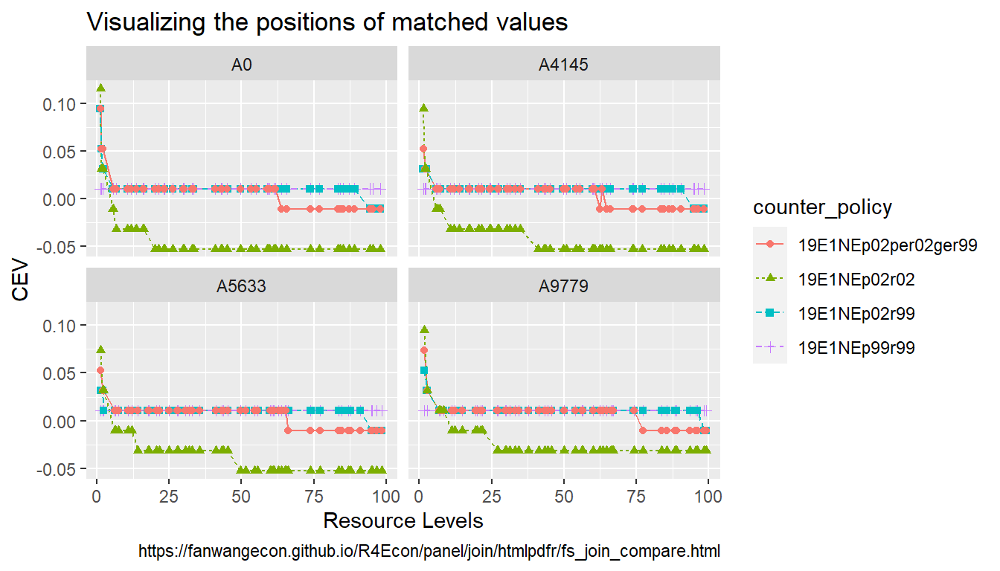

Chapter 4 Multi-dimensional Data Structures
4.1 Generate, Gather, Bind and Join
4.1.1 Generate Panel Structure
Go back to fan’s REconTools research support package, R4Econ examples page, PkgTestR packaging guide, or Stat4Econ course page.
4.1.1.1 Balanced Panel Skeleton
There are \(N\) individuals, each could be observed \(M\) times. In the example below, there are 3 students, each observed over 4 dates. This just uses the uncount function from tidyr.
# Define
it_N <- 3
it_M <- 5
svr_id <- 'student_id'
svr_date <- 'class_day'
# dataframe
df_panel_skeleton <- as_tibble(matrix(it_M, nrow=it_N, ncol=1)) %>%
rowid_to_column(var = svr_id) %>%
uncount(V1) %>%
group_by(!!sym(svr_id)) %>% mutate(!!sym(svr_date) := row_number()) %>%
ungroup()
# Print
kable(df_panel_skeleton) %>%
kable_styling_fc()| student_id | class_day |
|---|---|
| 1 | 1 |
| 1 | 2 |
| 1 | 3 |
| 1 | 4 |
| 1 | 5 |
| 2 | 1 |
| 2 | 2 |
| 2 | 3 |
| 2 | 4 |
| 2 | 5 |
| 3 | 1 |
| 3 | 2 |
| 3 | 3 |
| 3 | 4 |
| 3 | 5 |
4.1.1.2 Panel of Children with Height Growth
Given \(N\) individuals, each with \(G\) observations. There is an initial height variable and height grows every year. There are growth variables, variables for cumulative growth and variables for height at each age for each child.
Individuals are defined by gender (1 = female), race (1=asian), and birth height. Within individual yearly information includes height at each year of age.
# Define
it_N <- 5
it_M <- 3
svr_id <- 'indi_id'
svr_gender <- 'female'
svr_asian <- 'asian'
svr_age <- 'year_of_age'
# Define Height Related Variables
svr_brthgt <- 'birth_height'
svr_hgtgrow <- 'hgt_growth'
svr_hgtgrow_cumu <- 'hgt_growcumu'
svr_height <- 'height'
# panel dataframe following
set.seed(123)
df_panel_indiage <- as_tibble(matrix(it_M, nrow=it_N, ncol=1)) %>%
mutate(!!sym(svr_gender) := rbinom(n(), 1, 0.5),
!!sym(svr_asian) := rbinom(n(), 1, 0.5),
!!sym(svr_brthgt) := rnorm(n(), mean=60,sd=3)) %>%
uncount(V1) %>%
group_by(!!sym(svr_gender), !!sym(svr_asian), !!sym(svr_brthgt)) %>%
mutate(!!sym(svr_age) := row_number(),
!!sym(svr_hgtgrow) := runif(n(), min=5, max=15),
!!sym(svr_hgtgrow_cumu) := cumsum(!!sym(svr_hgtgrow)),
!!sym(svr_height) := !!sym(svr_brthgt) + !!sym(svr_hgtgrow_cumu)) %>%
ungroup()
# Add Height Index
kable(df_panel_indiage) %>% kable_styling_fc()| female | asian | birth_height | year_of_age | hgt_growth | hgt_growcumu | height |
|---|---|---|---|---|---|---|
| 0 | 0 | 65.14520 | 1 | 13.895393 | 13.895393 | 79.04059 |
| 0 | 0 | 65.14520 | 2 | 11.928034 | 25.823427 | 90.96862 |
| 0 | 0 | 65.14520 | 3 | 11.405068 | 37.228495 | 102.37369 |
| 1 | 1 | 61.38275 | 1 | 11.907053 | 11.907053 | 73.28980 |
| 1 | 1 | 61.38275 | 2 | 12.954674 | 24.861727 | 86.24448 |
| 1 | 1 | 61.38275 | 3 | 5.246137 | 30.107864 | 91.49061 |
| 0 | 1 | 56.20482 | 1 | 14.942698 | 14.942698 | 71.14751 |
| 0 | 1 | 56.20482 | 2 | 11.557058 | 26.499756 | 82.70457 |
| 0 | 1 | 56.20482 | 3 | 12.085305 | 38.585060 | 94.78988 |
| 1 | 1 | 57.93944 | 1 | 6.471137 | 6.471137 | 64.41058 |
| 1 | 1 | 57.93944 | 2 | 14.630242 | 21.101379 | 79.04082 |
| 1 | 1 | 57.93944 | 3 | 14.022991 | 35.124369 | 93.06381 |
| 1 | 0 | 58.66301 | 1 | 10.440660 | 10.440660 | 69.10367 |
| 1 | 0 | 58.66301 | 2 | 10.941420 | 21.382081 | 80.04509 |
| 1 | 0 | 58.66301 | 3 | 7.891597 | 29.273678 | 87.93669 |
4.1.1.3 Create Group IDs
Given the dataframe just created, generate group IDs for each Gender and Race Groups. Given that both are binary, there can only be 4 unique groups.
# group id
svr_group_id <- 'female_asian_id'
# Define
ls_svr_group_vars <- c('female', 'asian')
# panel dataframe following
df_panel_indiage_id <- df_panel_indiage %>%
arrange(!!!syms(ls_svr_group_vars)) %>%
group_by(!!!syms(ls_svr_group_vars)) %>%
mutate(!!sym(svr_group_id) := (row_number()==1)*1) %>%
ungroup() %>%
mutate(!!sym(svr_group_id) := cumsum(!!sym(svr_group_id))) %>%
select(one_of(svr_group_id, ls_svr_group_vars), everything())
# Add Height Index
kable(df_panel_indiage_id) %>%
kable_styling_fc_wide()| female_asian_id | female | asian | birth_height | year_of_age | hgt_growth | hgt_growcumu | height |
|---|---|---|---|---|---|---|---|
| 1 | 0 | 0 | 65.14520 | 1 | 13.895393 | 13.895393 | 79.04059 |
| 1 | 0 | 0 | 65.14520 | 2 | 11.928034 | 25.823427 | 90.96862 |
| 1 | 0 | 0 | 65.14520 | 3 | 11.405068 | 37.228495 | 102.37369 |
| 2 | 0 | 1 | 56.20482 | 1 | 14.942698 | 14.942698 | 71.14751 |
| 2 | 0 | 1 | 56.20482 | 2 | 11.557058 | 26.499756 | 82.70457 |
| 2 | 0 | 1 | 56.20482 | 3 | 12.085305 | 38.585060 | 94.78988 |
| 3 | 1 | 0 | 58.66301 | 1 | 10.440660 | 10.440660 | 69.10367 |
| 3 | 1 | 0 | 58.66301 | 2 | 10.941420 | 21.382081 | 80.04509 |
| 3 | 1 | 0 | 58.66301 | 3 | 7.891597 | 29.273678 | 87.93669 |
| 4 | 1 | 1 | 61.38275 | 1 | 11.907053 | 11.907053 | 73.28980 |
| 4 | 1 | 1 | 61.38275 | 2 | 12.954674 | 24.861727 | 86.24448 |
| 4 | 1 | 1 | 61.38275 | 3 | 5.246137 | 30.107864 | 91.49061 |
| 4 | 1 | 1 | 57.93944 | 1 | 6.471137 | 6.471137 | 64.41058 |
| 4 | 1 | 1 | 57.93944 | 2 | 14.630242 | 21.101379 | 79.04082 |
| 4 | 1 | 1 | 57.93944 | 3 | 14.022991 | 35.124369 | 93.06381 |
4.1.2 Join Datasets
Go back to fan’s REconTools research support package, R4Econ examples page, PkgTestR packaging guide, or Stat4Econ course page.
4.1.2.1 Join Panel with Multiple Keys
We have two datasets, one for student enrollment, panel over time, but some students do not show up on some dates. The other is a skeleton panel with all student ID and all dates. Often we need to join dataframes together, and we need to join by the student ID and the panel time Key at the same time. When students show up, there is a quiz score for that day, so the joined panel should have as data column quiz score
Student count is \(N\), total dates are \(M\). First we generate two panels below, then we join by both keys using left_join. First, define dataframes:
# Define
it_N <- 4
it_M <- 3
svr_id <- 'sid'
svr_date <- 'classday'
svr_attend <- 'date_in_class'
# Panel Skeleton
df_panel_balanced_skeleton <- as_tibble(matrix(it_M, nrow=it_N, ncol=1)) %>%
rowid_to_column(var = svr_id) %>%
uncount(V1) %>%
group_by(!!sym(svr_id)) %>% mutate(!!sym(svr_date) := row_number()) %>%
ungroup()
# Print
kable(df_panel_balanced_skeleton) %>%
kable_styling_fc()| sid | classday |
|---|---|
| 1 | 1 |
| 1 | 2 |
| 1 | 3 |
| 2 | 1 |
| 2 | 2 |
| 2 | 3 |
| 3 | 1 |
| 3 | 2 |
| 3 | 3 |
| 4 | 1 |
| 4 | 2 |
| 4 | 3 |
# Smaller Panel of Random Days in School
set.seed(456)
df_panel_attend <- as_tibble(matrix(it_M, nrow=it_N, ncol=1)) %>%
rowid_to_column(var = svr_id) %>%
uncount(V1) %>%
group_by(!!sym(svr_id)) %>% mutate(!!sym(svr_date) := row_number()) %>%
ungroup() %>% mutate(in_class = case_when(rnorm(n(),mean=0,sd=1) < 0 ~ 1, TRUE ~ 0)) %>%
filter(in_class == 1) %>% select(!!sym(svr_id), !!sym(svr_date)) %>%
rename(!!sym(svr_attend) := !!sym(svr_date)) %>%
mutate(dayquizscore = rnorm(n(),mean=80,sd=10))
# Print
kable(df_panel_attend) %>%
kable_styling_fc()| sid | date_in_class | dayquizscore |
|---|---|---|
| 1 | 1 | 89.88726 |
| 2 | 1 | 96.53929 |
| 2 | 2 | 65.59195 |
| 2 | 3 | 99.47356 |
| 4 | 2 | 97.36936 |
Second, now join dataframes:
# Join with explicit names
df_quiz_joined_multikey <- df_panel_balanced_skeleton %>%
left_join(df_panel_attend,
by=(c('sid'='sid', 'classday'='date_in_class')))
# Join with setname strings
df_quiz_joined_multikey_setnames <- df_panel_balanced_skeleton %>%
left_join(df_panel_attend, by=setNames(c('sid', 'date_in_class'), c('sid', 'classday')))
# Print
kable(df_quiz_joined_multikey) %>%
kable_styling_fc()| sid | classday | dayquizscore |
|---|---|---|
| 1 | 1 | 89.88726 |
| 1 | 2 | NA |
| 1 | 3 | NA |
| 2 | 1 | 96.53929 |
| 2 | 2 | 65.59195 |
| 2 | 3 | 99.47356 |
| 3 | 1 | NA |
| 3 | 2 | NA |
| 3 | 3 | NA |
| 4 | 1 | NA |
| 4 | 2 | 97.36936 |
| 4 | 3 | NA |
| sid | classday | dayquizscore |
|---|---|---|
| 1 | 1 | 89.88726 |
| 1 | 2 | NA |
| 1 | 3 | NA |
| 2 | 1 | 96.53929 |
| 2 | 2 | 65.59195 |
| 2 | 3 | 99.47356 |
| 3 | 1 | NA |
| 3 | 2 | NA |
| 3 | 3 | NA |
| 4 | 1 | NA |
| 4 | 2 | 97.36936 |
| 4 | 3 | NA |
4.1.2.2 Stack Panel Frames Together
There are multiple panel dataframe, each for different subsets of dates. All variable names and units of observations are identical. Use DPLYR bind_rows.
# Define
it_N <- 2 # Number of individuals
it_M <- 3 # Number of Months
svr_id <- 'sid'
svr_date <- 'date'
# Panel First Half of Year
df_panel_m1tom3 <- as_tibble(matrix(it_M, nrow=it_N, ncol=1)) %>%
rowid_to_column(var = svr_id) %>%
uncount(V1) %>%
group_by(!!sym(svr_id)) %>% mutate(!!sym(svr_date) := row_number()) %>%
ungroup()
# Panel Second Half of Year
df_panel_m4tom6 <- as_tibble(matrix(it_M, nrow=it_N, ncol=1)) %>%
rowid_to_column(var = svr_id) %>%
uncount(V1) %>%
group_by(!!sym(svr_id)) %>% mutate(!!sym(svr_date) := row_number() + 3) %>%
ungroup()
# Bind Rows
df_panel_m1tm6 <- bind_rows(df_panel_m1tom3, df_panel_m4tom6) %>% arrange(!!!syms(c(svr_id, svr_date)))
# Print
kable(df_panel_m1tom3) %>%
kable_styling_fc()| sid | date |
|---|---|
| 1 | 1 |
| 1 | 2 |
| 1 | 3 |
| 2 | 1 |
| 2 | 2 |
| 2 | 3 |
| sid | date |
|---|---|
| 1 | 4 |
| 1 | 5 |
| 1 | 6 |
| 2 | 4 |
| 2 | 5 |
| 2 | 6 |
| sid | date |
|---|---|
| 1 | 1 |
| 1 | 2 |
| 1 | 3 |
| 1 | 4 |
| 1 | 5 |
| 1 | 6 |
| 2 | 1 |
| 2 | 2 |
| 2 | 3 |
| 2 | 4 |
| 2 | 5 |
| 2 | 6 |
4.1.3 Gather Files
Go back to fan’s REconTools research support package, R4Econ examples page, PkgTestR packaging guide, or Stat4Econ course page.
4.1.3.1 Stack CSV Files Together Extract and Select Variables
There are multiple csv files, each was simulated with a different combination of parameters, each file has the same columns and perhaps even the same number of rows. We want to combine the files together, and provide correct attributes to rows from each table stacked, based on each underlying csv file’s file name.
This is necessary, for example, when running computational exercises across EC2 instances in batch array and files are saved to different S3 folders. Need to gather parallel computational results together in a single file after syncing files locally with S3.
In the csv folder under this section, there are four subfolder, each containing 3 files with identical file structures.
We want to find the relevant csv files from these directories, and stack the results together.
- File search search string, search in all subfolders, the search string contains file prefix that is common across files that need to be gathered.
- Extract path folder hierarchy, each layer of folder is a different variable
- Stack files together, with variables for file name and folder name
- Extract from file name the component that is not in the search string, keep as separate variable
- Follow specific rules about how file suffix is constructed to obtain additional variables.
- Keep only a subset of columns of interest.
First, search and find all files with certain prefix.
# can search in multiple paths, second path here has no relevant contents
spt_roots <- c('C:/Users/fan/R4Econ/panel/basic/_file/csv',
'C:/Users/fan/R4Econ/panel/basic/_file/tex')
# can skip file names with certain strings
spn_skip <- c('A3420')
# prefix search patther,
st_search_str <- 'solu_19E1NEp99r99x_ITG_PE_cev_*'
# Search and get all Path
ls_sfls <- list.files(path=spt_roots,
recursive=T,
pattern=st_search_str,
full.names=T)
# Skip path if contains words in skip list
if(!missing(spn_skip)) {
ls_sfls <- ls_sfls[!grepl(paste(spn_skip, collapse = "|"), ls_sfls)]
}Second, show all the files found, show their full path, the file name and the two folder names above the file name.
# Loop and print found files
it_folders_names_to_keep = 2
for (spt_file in ls_sfls) {
ls_srt_folders_name_keep <- tail(strsplit(spt_file, "/")[[1]], n=it_folders_names_to_keep+1)
snm_file_name <- tail(ls_srt_folders_name_keep, 1)
ls_srt_folders_keep <- head(ls_srt_folders_name_keep, it_folders_names_to_keep)
print(paste0('path:', spt_file))
print(snm_file_name)
print(ls_srt_folders_keep)
}## [1] "path:C:/Users/fan/R4Econ/panel/basic/_file/csv/cev-2000/solu_19E1NEp99r99x_ITG_PE_cev_c0_cev-2000_A0.csv"
## [1] "solu_19E1NEp99r99x_ITG_PE_cev_c0_cev-2000_A0.csv"
## [1] "csv" "cev-2000"
## [1] "path:C:/Users/fan/R4Econ/panel/basic/_file/csv/cev-2000/solu_19E1NEp99r99x_ITG_PE_cev_c0_cev-2000_A6840.csv"
## [1] "solu_19E1NEp99r99x_ITG_PE_cev_c0_cev-2000_A6840.csv"
## [1] "csv" "cev-2000"
## [1] "path:C:/Users/fan/R4Econ/panel/basic/_file/csv/cev-947/solu_19E1NEp99r99x_ITG_PE_cev_c5_cev-947_A0.csv"
## [1] "solu_19E1NEp99r99x_ITG_PE_cev_c5_cev-947_A0.csv"
## [1] "csv" "cev-947"
## [1] "path:C:/Users/fan/R4Econ/panel/basic/_file/csv/cev-947/solu_19E1NEp99r99x_ITG_PE_cev_c5_cev-947_A6840.csv"
## [1] "solu_19E1NEp99r99x_ITG_PE_cev_c5_cev-947_A6840.csv"
## [1] "csv" "cev-947"
## [1] "path:C:/Users/fan/R4Econ/panel/basic/_file/csv/cev2000/solu_19E1NEp99r99x_ITG_PE_cev_c19_cev2000_A0.csv"
## [1] "solu_19E1NEp99r99x_ITG_PE_cev_c19_cev2000_A0.csv"
## [1] "csv" "cev2000"
## [1] "path:C:/Users/fan/R4Econ/panel/basic/_file/csv/cev2000/solu_19E1NEp99r99x_ITG_PE_cev_c19_cev2000_A6840.csv"
## [1] "solu_19E1NEp99r99x_ITG_PE_cev_c19_cev2000_A6840.csv"
## [1] "csv" "cev2000"
## [1] "path:C:/Users/fan/R4Econ/panel/basic/_file/csv/cev947/solu_19E1NEp99r99x_ITG_PE_cev_c14_cev947_A0.csv"
## [1] "solu_19E1NEp99r99x_ITG_PE_cev_c14_cev947_A0.csv"
## [1] "csv" "cev947"
## [1] "path:C:/Users/fan/R4Econ/panel/basic/_file/csv/cev947/solu_19E1NEp99r99x_ITG_PE_cev_c14_cev947_A6840.csv"
## [1] "solu_19E1NEp99r99x_ITG_PE_cev_c14_cev947_A6840.csv"
## [1] "csv" "cev947"Third, create a dataframe with the folder and file names:
# String matrix empty
mt_st_paths_names <- matrix(data=NA, nrow=length(ls_sfls), ncol=4)
# Loop and print found files
it_folders_names_to_keep = 2
it_file_counter = 0
for (spt_file in ls_sfls) {
# row counter
it_file_counter = it_file_counter + 1
# get file paths
ls_srt_folders_name_keep <- tail(strsplit(spt_file, "/")[[1]], n=it_folders_names_to_keep+1)
snm_file_name <- tail(ls_srt_folders_name_keep, 1)
ls_srt_folders_keep <- head(ls_srt_folders_name_keep, it_folders_names_to_keep)
# store
# tools::file_path_sans_ext to drop suffix
mt_st_paths_names[it_file_counter,1] = tools::file_path_sans_ext(snm_file_name)
mt_st_paths_names[it_file_counter,2] = ls_srt_folders_keep[1]
mt_st_paths_names[it_file_counter,3] = ls_srt_folders_keep[2]
mt_st_paths_names[it_file_counter,4] = spt_file
}
# Column Names
ar_st_varnames <- c('fileid','name','folder1','folder2', 'fullpath')
# Combine to tibble, add name col1, col2, etc.
tb_csv_info <- as_tibble(mt_st_paths_names) %>%
rowid_to_column(var = "id") %>%
rename_all(~c(ar_st_varnames))
# Display
kable(tb_csv_info[,1:4]) %>% kable_styling_fc()| fileid | name | folder1 | folder2 |
|---|---|---|---|
| 1 | solu_19E1NEp99r99x_ITG_PE_cev_c0_cev-2000_A0 | csv | cev-2000 |
| 2 | solu_19E1NEp99r99x_ITG_PE_cev_c0_cev-2000_A6840 | csv | cev-2000 |
| 3 | solu_19E1NEp99r99x_ITG_PE_cev_c5_cev-947_A0 | csv | cev-947 |
| 4 | solu_19E1NEp99r99x_ITG_PE_cev_c5_cev-947_A6840 | csv | cev-947 |
| 5 | solu_19E1NEp99r99x_ITG_PE_cev_c19_cev2000_A0 | csv | cev2000 |
| 6 | solu_19E1NEp99r99x_ITG_PE_cev_c19_cev2000_A6840 | csv | cev2000 |
| 7 | solu_19E1NEp99r99x_ITG_PE_cev_c14_cev947_A0 | csv | cev947 |
| 8 | solu_19E1NEp99r99x_ITG_PE_cev_c14_cev947_A6840 | csv | cev947 |
Fourth, create a dataframe by expanding each row with the datafile loaded in, use apply with anonymous function.
# Generate a list of dataframes
ls_df_loaded_files =
apply(tb_csv_info,
1,
function(row) {
# Loading file
spn_full_path <- row[5]
mt_csv = read.csv(file = spn_full_path)
# dataframe
it_fileid <- row[1]
snm_filename <- row[2]
srt_folder_level2 <- row[3]
srt_folder_level1 <- row[4]
tb_combine = as_tibble(mt_csv) %>%
na.omit %>%
rowid_to_column(var = "statesid") %>%
mutate(fileid = it_fileid,
filename = snm_filename,
folder_lvl1 = srt_folder_level1,
folder_lvl2 = srt_folder_level2) %>%
select(fileid, filename, folder_lvl1, folder_lvl2,
statesid, everything())
# return
return(tb_combine)
})
# Stack dataframes together
df_all_files = do.call(bind_rows, ls_df_loaded_files)
# show stacked table
kable(df_all_files[seq(1,601,50),1:6]) %>% kable_styling_fc_wide()| fileid | filename | folder_lvl1 | folder_lvl2 | statesid | EjV |
|---|---|---|---|---|---|
| 1 | solu_19E1NEp99r99x_ITG_PE_cev_c0_cev-2000_A0 | cev-2000 | csv | 1 | -28.8586860 |
| 1 | solu_19E1NEp99r99x_ITG_PE_cev_c0_cev-2000_A0 | cev-2000 | csv | 51 | -0.2106603 |
| 2 | solu_19E1NEp99r99x_ITG_PE_cev_c0_cev-2000_A6840 | cev-2000 | csv | 3 | -28.8586860 |
| 2 | solu_19E1NEp99r99x_ITG_PE_cev_c0_cev-2000_A6840 | cev-2000 | csv | 53 | -0.0642997 |
| 3 | solu_19E1NEp99r99x_ITG_PE_cev_c5_cev-947_A0 | cev-947 | csv | 5 | -5.8826609 |
| 3 | solu_19E1NEp99r99x_ITG_PE_cev_c5_cev-947_A0 | cev-947 | csv | 55 | 0.0353187 |
| 4 | solu_19E1NEp99r99x_ITG_PE_cev_c5_cev-947_A6840 | cev-947 | csv | 7 | -2.7046907 |
| 4 | solu_19E1NEp99r99x_ITG_PE_cev_c5_cev-947_A6840 | cev-947 | csv | 57 | 0.1094474 |
| 5 | solu_19E1NEp99r99x_ITG_PE_cev_c19_cev2000_A0 | cev2000 | csv | 9 | -2.9782236 |
| 5 | solu_19E1NEp99r99x_ITG_PE_cev_c19_cev2000_A0 | cev2000 | csv | 59 | 0.3389275 |
| 6 | solu_19E1NEp99r99x_ITG_PE_cev_c19_cev2000_A6840 | cev2000 | csv | 11 | -1.7229647 |
| 6 | solu_19E1NEp99r99x_ITG_PE_cev_c19_cev2000_A6840 | cev2000 | csv | 61 | -14.6880377 |
| 7 | solu_19E1NEp99r99x_ITG_PE_cev_c14_cev947_A0 | cev947 | csv | 13 | -1.7623279 |
Fifth, get additional information from the file name and file folder. Extract those as separate variables. The file names is dash connected, with various information. First, split just the final element of the string file name out, which is A###. Then, also extract the number next to N as a separate numeric column. Additional folder_lvl1 separate out the numeric number from the initial word cev.
# separate last eleemtnafter underscore
df_all_files_finalA <- df_all_files %>%
separate(filename, into = c("filename_main", "prod_type_st"),
sep="_(?=[^_]+$)",
remove = FALSE) %>%
select(fileid, filename, filename_main, prod_type_st, folder_lvl1, folder_lvl2,
statesid, everything())
# show stacked table
kable(df_all_files_finalA[seq(1,601,50),1:10]) %>% kable_styling_fc_wide()| fileid | filename | filename_main | prod_type_st | folder_lvl1 | folder_lvl2 | statesid | EjV | k_tt | b_tt |
|---|---|---|---|---|---|---|---|---|---|
| 1 | solu_19E1NEp99r99x_ITG_PE_cev_c0_cev-2000_A0 | solu_19E1NEp99r99x_ITG_PE_cev_c0_cev-2000 | A0 | cev-2000 | csv | 1 | -28.8586860 | 0.000000 | 0.000000 |
| 1 | solu_19E1NEp99r99x_ITG_PE_cev_c0_cev-2000_A0 | solu_19E1NEp99r99x_ITG_PE_cev_c0_cev-2000 | A0 | cev-2000 | csv | 51 | -0.2106603 | 0.000000 | 78.005300 |
| 2 | solu_19E1NEp99r99x_ITG_PE_cev_c0_cev-2000_A6840 | solu_19E1NEp99r99x_ITG_PE_cev_c0_cev-2000 | A6840 | cev-2000 | csv | 3 | -28.8586860 | 0.000000 | 0.000000 |
| 2 | solu_19E1NEp99r99x_ITG_PE_cev_c0_cev-2000_A6840 | solu_19E1NEp99r99x_ITG_PE_cev_c0_cev-2000 | A6840 | cev-2000 | csv | 53 | -0.0642997 | 0.000000 | 84.215368 |
| 3 | solu_19E1NEp99r99x_ITG_PE_cev_c5_cev-947_A0 | solu_19E1NEp99r99x_ITG_PE_cev_c5_cev-947 | A0 | cev-947 | csv | 5 | -5.8826609 | 0.000000 | 3.869909 |
| 3 | solu_19E1NEp99r99x_ITG_PE_cev_c5_cev-947_A0 | solu_19E1NEp99r99x_ITG_PE_cev_c5_cev-947 | A0 | cev-947 | csv | 55 | 0.0353187 | 0.000000 | 90.611739 |
| 4 | solu_19E1NEp99r99x_ITG_PE_cev_c5_cev-947_A6840 | solu_19E1NEp99r99x_ITG_PE_cev_c5_cev-947 | A6840 | cev-947 | csv | 7 | -2.7046907 | 0.000000 | 7.855916 |
| 4 | solu_19E1NEp99r99x_ITG_PE_cev_c5_cev-947_A6840 | solu_19E1NEp99r99x_ITG_PE_cev_c5_cev-947 | A6840 | cev-947 | csv | 57 | 0.1094474 | 0.000000 | 90.611739 |
| 5 | solu_19E1NEp99r99x_ITG_PE_cev_c19_cev2000_A0 | solu_19E1NEp99r99x_ITG_PE_cev_c19_cev2000 | A0 | cev2000 | csv | 9 | -2.9782236 | 0.000000 | 7.855916 |
| 5 | solu_19E1NEp99r99x_ITG_PE_cev_c19_cev2000_A0 | solu_19E1NEp99r99x_ITG_PE_cev_c19_cev2000 | A0 | cev2000 | csv | 59 | 0.3389275 | 0.000000 | 97.200000 |
| 6 | solu_19E1NEp99r99x_ITG_PE_cev_c19_cev2000_A6840 | solu_19E1NEp99r99x_ITG_PE_cev_c19_cev2000 | A6840 | cev2000 | csv | 11 | -1.7229647 | 0.000000 | 11.961502 |
| 6 | solu_19E1NEp99r99x_ITG_PE_cev_c19_cev2000_A6840 | solu_19E1NEp99r99x_ITG_PE_cev_c19_cev2000 | A6840 | cev2000 | csv | 61 | -14.6880377 | 1.990694 | -1.879215 |
| 7 | solu_19E1NEp99r99x_ITG_PE_cev_c14_cev947_A0 | solu_19E1NEp99r99x_ITG_PE_cev_c14_cev947 | A0 | cev947 | csv | 13 | -1.7623279 | 0.000000 | 16.190257 |
Split “A###” to “A” and “A###”. Additionally, also split cev#### to cev and ####, allow for positive and negative numbers. See regular expression 101 helper
# string and number separation
df_all_files_finalB <- df_all_files_finalA %>%
separate(prod_type_st,
into = c("prod_type_st_prefix", "prod_type_lvl"),
sep="(?<=[A-Za-z])(?=[-0-9])", # positive or negative numbers
remove=FALSE) %>%
separate(folder_lvl1,
into = c("cev_prefix", "cev_lvl"),
sep="(?<=[A-Za-z])(?=[-0-9])", # positive or negative numbers
remove=FALSE) %>%
mutate(cev_st = folder_lvl1,
prod_type_lvl = as.numeric(prod_type_lvl),
cev_lvl = as.numeric(cev_lvl)/10000) %>%
select(fileid,
prod_type_st, prod_type_lvl,
cev_st, cev_lvl,
statesid, EjV,
filename, folder_lvl1, folder_lvl2)
# Ordering, sort by cev_lvl, then prod_type_lvl, then stateid
df_all_files_finalB <- df_all_files_finalB %>%
arrange(cev_lvl, prod_type_lvl, statesid)
# show stacked table
kable(df_all_files_finalB[seq(1,49*16,49),1:7]) %>% kable_styling_fc_wide()| fileid | prod_type_st | prod_type_lvl | cev_st | cev_lvl | statesid | EjV |
|---|---|---|---|---|---|---|
| 1 | A0 | 0 | cev-2000 | -0.2000 | 1 | -28.8586860 |
| 1 | A0 | 0 | cev-2000 | -0.2000 | 50 | -0.2106603 |
| 2 | A6840 | 6840 | cev-2000 | -0.2000 | 1 | -28.8586860 |
| 2 | A6840 | 6840 | cev-2000 | -0.2000 | 50 | -0.1311749 |
| 3 | A0 | 0 | cev-947 | -0.0947 | 1 | -28.0399281 |
| 3 | A0 | 0 | cev-947 | -0.0947 | 50 | -0.0911499 |
| 4 | A6840 | 6840 | cev-947 | -0.0947 | 1 | -28.0399281 |
| 4 | A6840 | 6840 | cev-947 | -0.0947 | 50 | -0.0134719 |
| 7 | A0 | 0 | cev947 | 0.0947 | 1 | -26.8243673 |
| 7 | A0 | 0 | cev947 | 0.0947 | 50 | 0.0857474 |
| 8 | A6840 | 6840 | cev947 | 0.0947 | 1 | -26.8243673 |
| 8 | A6840 | 6840 | cev947 | 0.0947 | 50 | 0.1608382 |
| 5 | A0 | 0 | cev2000 | 0.2000 | 1 | -26.2512036 |
| 5 | A0 | 0 | cev2000 | 0.2000 | 50 | 0.1694524 |
| 6 | A6840 | 6840 | cev2000 | 0.2000 | 1 | -26.2512036 |
| 6 | A6840 | 6840 | cev2000 | 0.2000 | 50 | 0.2432677 |
4.2 Wide and Long
4.2.1 Long Table to Wide Table
Go back to fan’s REconTools research support package, R4Econ examples page, PkgTestR packaging guide, or Stat4Econ course page.
Using the pivot_wider function in tidyr to reshape panel or other data structures
4.2.1.1 Compute Wide Table Cumulative Student Attendance based on Long Table Roster
There are \(N\) students in class, but only a subset of them attend class each day. If student \(id_i\) is in class on day \(Q\), the teacher records on a sheet the date and the student ID. So if the student has been in class 10 times, the teacher has ten rows of recorded data for the student with two columns: column one is the student ID, and column two is the date on which the student was in class.
Suppose there were 50 students, who on average attended exactly 10 classes each during the semester, this means we have \(10 \cdot 50\) rows of data, with differing numbers of rows for each student. This is shown as df_panel_attend_date generated below.
Now we want to generate a new dataframe, where each row is a date, and each column is a student. The values in the new dataframe shows, at the \(Q^{th}\) day (row), how many classes student \(i\) has attended so far. The following results is also in a REconTools Function. This is shown as df_attend_cumu_by_day generated below.
First, generate the raw data structure, df_panel_attend_date:
# Define
it_N <- 3
it_M <- 5
svr_id <- 'student_id'
# from : support/rand/fs_rand_draws.Rmd
set.seed(222)
df_panel_attend_date <- as_tibble(matrix(it_M, nrow=it_N, ncol=1)) %>%
rowid_to_column(var = svr_id) %>%
uncount(V1) %>%
group_by(!!sym(svr_id)) %>% mutate(date = row_number()) %>%
ungroup() %>%
mutate(in_class = case_when(rnorm(n(),mean=0,sd=1) < 0 ~ 1, TRUE ~ 0)) %>%
filter(in_class == 1) %>% select(!!sym(svr_id), date) %>%
rename(date_in_class = date)
# Print
kable(df_panel_attend_date) %>%
kable_styling_fc()| student_id | date_in_class |
|---|---|
| 1 | 2 |
| 1 | 4 |
| 2 | 1 |
| 2 | 2 |
| 2 | 5 |
| 3 | 2 |
| 3 | 3 |
| 3 | 5 |
Second, we create a attendance column that is all 1. This is not useful for the long table, but useful for our conversion to wide.
# Define
svr_id <- 'student_id'
svr_date <- 'date_in_class'
st_idcol_prefix <- 'sid_'
# Generate cumulative enrollment counts by date
df_panel_attend_date_addone <- df_panel_attend_date %>% mutate(attended = 1)
kable(df_panel_attend_date_addone) %>%
kable_styling_fc()| student_id | date_in_class | attended |
|---|---|---|
| 1 | 2 | 1 |
| 1 | 4 | 1 |
| 2 | 1 | 1 |
| 2 | 2 | 1 |
| 2 | 5 | 1 |
| 3 | 2 | 1 |
| 3 | 3 | 1 |
| 3 | 5 | 1 |
Third, we convert the long table to wide. The unit of observation is student-day for the long table, and day for the wide table.
# Pivot Wide
df_panel_attend_date_wider <- df_panel_attend_date_addone %>%
arrange(student_id) %>%
pivot_wider(names_from = svr_id,
values_from = attended)
# Sort and rename
# rename see: https://fanwangecon.github.io/R4Econ/amto/tibble/fs_tib_basics.html
ar_unique_ids <- sort(unique(df_panel_attend_date %>% pull(!!sym(svr_id))))
df_panel_attend_date_wider_sort <- df_panel_attend_date_wider %>%
arrange(!!sym(svr_date)) %>%
rename_at(vars(num_range('',ar_unique_ids))
, list(~paste0(st_idcol_prefix, . , ''))
)
kable(df_panel_attend_date_wider_sort) %>%
kable_styling_fc()| date_in_class | sid_1 | sid_2 | sid_3 |
|---|---|---|---|
| 1 | NA | 1 | NA |
| 2 | 1 | 1 | 1 |
| 3 | NA | NA | 1 |
| 4 | 1 | NA | NA |
| 5 | NA | 1 | 1 |
Fourth, we could achieve what we have above by specifying more parameters in the pivot_wider function.
# Include name_prefix
df_panel_attend_date_wider_sort <- df_panel_attend_date_addone %>%
arrange(student_id) %>%
pivot_wider(id_cols = c("date_in_class"),
names_from = svr_id,
names_prefix = "sid_",
values_from = attended) %>%
arrange(date_in_class)
# Print
kable(df_panel_attend_date_wider_sort) %>%
kable_styling_fc()| date_in_class | sid_1 | sid_2 | sid_3 |
|---|---|---|---|
| 1 | NA | 1 | NA |
| 2 | 1 | 1 | 1 |
| 3 | NA | NA | 1 |
| 4 | 1 | NA | NA |
| 5 | NA | 1 | 1 |
Fifth, sum across rows for each student (column) to get cumulative attendance for each student on each date.
# replace NA and cumusum again
# see: R4Econ/support/function/fs_func_multivar for renaming and replacing
df_attend_cumu_by_day <- df_panel_attend_date_wider_sort %>%
mutate_at(vars(contains(st_idcol_prefix)), list(~replace_na(., 0))) %>%
mutate_at(vars(contains(st_idcol_prefix)), list(~cumsum(.)))
kable(df_attend_cumu_by_day) %>%
kable_styling_fc()| date_in_class | sid_1 | sid_2 | sid_3 |
|---|---|---|---|
| 1 | 0 | 1 | 0 |
| 2 | 1 | 2 | 1 |
| 3 | 1 | 2 | 2 |
| 4 | 2 | 2 | 2 |
| 5 | 2 | 3 | 3 |
Finally, the structure above is also a function in Fan’s REconTools Package, here the function is tested:
# Parameters
df <- df_panel_attend_date
svr_id_i <- 'student_id'
svr_id_t <- 'date_in_class'
st_idcol_prefix <- 'sid_'
# Invoke Function
ls_df_rosterwide <- ff_panel_expand_longrosterwide(df, svr_id_t, svr_id_i, st_idcol_prefix)
df_roster_wide_func <- ls_df_rosterwide$df_roster_wide
df_roster_wide_cumu_func <- ls_df_rosterwide$df_roster_wide_cumu
# Print
print(df_roster_wide_func)
print(df_roster_wide_cumu_func)4.2.1.2 Panel Long Attendance Roster and Score Card to Wide
In the prior example, at each date, we only had information about attendance, however, we might also know the exam score on each day when the student attends school. In the long table, this appears, in addition to attended, as an additional variable score. When we convert from long to wide, we will have 3 new columns for attendance and also 3 new columns for score. The 3 columns are for the three students, there will be five rows for the five days. Each row in the wide table is the attendance and score information for each day.
First, we add a random score column to the long dataframe created prior. Also add two other additional columns.
# Create score column
set.seed(123)
df_panel_attend_score_date <- df_panel_attend_date_addone %>%
mutate(score = rnorm(dim(df_panel_attend_date_addone)[1], mean=70, sd=10)) %>%
mutate(score = round(score, 2),
other_var_1 = 1, other_var_2 = 2)
# Print
kable(df_panel_attend_score_date, caption="Attend and score info") %>%
kable_styling_fc()| student_id | date_in_class | attended | score | other_var_1 | other_var_2 |
|---|---|---|---|---|---|
| 1 | 2 | 1 | 64.40 | 1 | 2 |
| 1 | 4 | 1 | 67.70 | 1 | 2 |
| 2 | 1 | 1 | 85.59 | 1 | 2 |
| 2 | 2 | 1 | 70.71 | 1 | 2 |
| 2 | 5 | 1 | 71.29 | 1 | 2 |
| 3 | 2 | 1 | 87.15 | 1 | 2 |
| 3 | 3 | 1 | 74.61 | 1 | 2 |
| 3 | 5 | 1 | 57.35 | 1 | 2 |
Second, convert both attended and score columns to wide at the same time. Note that we add “sid” in front of the index for each student. Note that id_cols picks the columns to keep in addition to the names_from and values_from columns. In this case, we are not keeping other_var_1 and other_var_2.
# Convert to wide
df_panel_attend_score_date_wide <- df_panel_attend_score_date %>%
arrange(student_id) %>%
pivot_wider(id_cols = c("date_in_class"),
names_from = svr_id,
names_prefix = "sid",
names_sep = "_",
values_from = c(attended, score)) %>%
arrange(date_in_class)
# Print
kable(df_panel_attend_score_date_wide, caption="Attend and score wide") %>%
kable_styling_fc_wide()| date_in_class | attended_sid1 | attended_sid2 | attended_sid3 | score_sid1 | score_sid2 | score_sid3 |
|---|---|---|---|---|---|---|
| 1 | NA | 1 | NA | NA | 85.59 | NA |
| 2 | 1 | 1 | 1 | 64.4 | 70.71 | 87.15 |
| 3 | NA | NA | 1 | NA | NA | 74.61 |
| 4 | 1 | NA | NA | 67.7 | NA | NA |
| 5 | NA | 1 | 1 | NA | 71.29 | 57.35 |
4.2.2 Wide to Long
Go back to fan’s REconTools research support package, R4Econ examples page, PkgTestR packaging guide, or Stat4Econ course page.
Using the pivot_wider function in tidyr to reshape panel or other data structures
4.2.2.1 Wide to long panel, single variable
We have a matrix of values, the values are ev. Each row corresponds to a different value of the a variable, each column represents a different value of the z variable.
Based on this matrix, we create a table where each unit of observation is for a specific a and z variable combination. So the matrix is turned from wide to long.
The resulting long table has 5 variables
- a: values of the a variable, the original matrix row labels
- ai: an index from 1, indicating the original matrix row index
- z: values of the z variable, the original matrix column lables
- zi: an index from 1, indicating hte original matrix column index
First, we create the matrix.
# Generate A Matrix
set.seed(123)
ar_a <- c(1.1,5.1)
ar_z <- seq(-2.5, 2.53, length.out=11)
mt_ev = matrix(rnorm(length(ar_a)*length(ar_z)),
nrow=length(ar_a), ncol=length(ar_z))
# Name Matrix
rownames(mt_ev) <- paste0('ai', seq(1:length(ar_a)))
colnames(mt_ev) <- paste0('zi', seq(1:length(ar_z)))
# to tibble
tb_ev <- as_tibble(mt_ev) %>% rowid_to_column(var = "ai")
# Print
print(mt_ev)## zi1 zi2 zi3 zi4 zi5 zi6 zi7
## ai1 -0.5604756 1.55870831 0.1292877 0.4609162 -0.6868529 1.2240818 0.4007715
## ai2 -0.2301775 0.07050839 1.7150650 -1.2650612 -0.4456620 0.3598138 0.1106827
## zi8 zi9 zi10 zi11
## ai1 -0.5558411 0.4978505 0.7013559 -1.0678237
## ai2 1.7869131 -1.9666172 -0.4727914 -0.2179749| ai | zi1 | zi2 | zi3 | zi4 | zi5 | zi6 | zi7 | zi8 | zi9 | zi10 | zi11 |
|---|---|---|---|---|---|---|---|---|---|---|---|
| 1 | -0.5604756 | 1.5587083 | 0.1292877 | 0.4609162 | -0.6868529 | 1.2240818 | 0.4007715 | -0.5558411 | 0.4978505 | 0.7013559 | -1.0678237 |
| 2 | -0.2301775 | 0.0705084 | 1.7150650 | -1.2650612 | -0.4456620 | 0.3598138 | 0.1106827 | 1.7869131 | -1.9666172 | -0.4727914 | -0.2179749 |
Second, we convert the table wide to long.
# longer
tb_ev_long <- tb_ev %>%
pivot_longer(cols = starts_with('zi'),
names_to = c('zi'),
names_pattern = paste0("zi(.*)"),
values_to = "ev") %>%
mutate(zi = as.numeric(zi))
# Merge with a and z values
tb_ev_long <- tb_ev_long %>%
left_join(as_tibble(ar_a) %>%
rowid_to_column(var = "ai") %>%
rename(a = value)
, by = 'ai') %>%
left_join(as_tibble(ar_z) %>%
rowid_to_column(var = "zi") %>%
rename(z = value),
by = 'zi') %>%
select(a,ai,z,zi,ev)
# Display
kable(tb_ev_long, caption = "Long table") %>% kable_styling_fc()| a | ai | z | zi | ev |
|---|---|---|---|---|
| 1.1 | 1 | -2.500 | 1 | -0.5604756 |
| 1.1 | 1 | -1.997 | 2 | 1.5587083 |
| 1.1 | 1 | -1.494 | 3 | 0.1292877 |
| 1.1 | 1 | -0.991 | 4 | 0.4609162 |
| 1.1 | 1 | -0.488 | 5 | -0.6868529 |
| 1.1 | 1 | 0.015 | 6 | 1.2240818 |
| 1.1 | 1 | 0.518 | 7 | 0.4007715 |
| 1.1 | 1 | 1.021 | 8 | -0.5558411 |
| 1.1 | 1 | 1.524 | 9 | 0.4978505 |
| 1.1 | 1 | 2.027 | 10 | 0.7013559 |
| 1.1 | 1 | 2.530 | 11 | -1.0678237 |
| 5.1 | 2 | -2.500 | 1 | -0.2301775 |
| 5.1 | 2 | -1.997 | 2 | 0.0705084 |
| 5.1 | 2 | -1.494 | 3 | 1.7150650 |
| 5.1 | 2 | -0.991 | 4 | -1.2650612 |
| 5.1 | 2 | -0.488 | 5 | -0.4456620 |
| 5.1 | 2 | 0.015 | 6 | 0.3598138 |
| 5.1 | 2 | 0.518 | 7 | 0.1106827 |
| 5.1 | 2 | 1.021 | 8 | 1.7869131 |
| 5.1 | 2 | 1.524 | 9 | -1.9666172 |
| 5.1 | 2 | 2.027 | 10 | -0.4727914 |
| 5.1 | 2 | 2.530 | 11 | -0.2179749 |
4.2.2.2 Wide to long panel, multiple variables
We have a dataset where each row contains data from a different year. We have four variables, observed wage, simulated wage, observed labor quantities, and simulated labor quantities.
We generate reshape this file to have four variables:
- year
- categorical for wage or quantity
- categorical for observed or simulated
- a numerical column with wage and quantity values
This is different then the situation prior, because we are need to convert to long two different numerical variables that will be in the same long variable, but differentiated by two categorical variables (rather than one).
First, we create the matrix.
# Generate A Matrix
set.seed(123)
ar_year <- c(1995, 1997, 1999)
ar_vars <- c("wage_model", "quant_model", "wage_simu", "quant_simu")
mt_equi = matrix(rnorm(length(ar_year)*length(ar_vars)),
nrow=length(ar_year), ncol=length(ar_vars))
# Name Matrix
rownames(mt_equi) <- ar_year
colnames(mt_equi) <- ar_vars
# to tibble
tb_equi <- as_tibble(mt_equi, rownames = "year")
# Print
print(mt_equi)## wage_model quant_model wage_simu quant_simu
## 1995 -0.5604756 0.07050839 0.4609162 -0.4456620
## 1997 -0.2301775 0.12928774 -1.2650612 1.2240818
## 1999 1.5587083 1.71506499 -0.6868529 0.3598138| year | wage_model | quant_model | wage_simu | quant_simu |
|---|---|---|---|---|
| 1995 | -0.5604756 | 0.0705084 | 0.4609162 | -0.4456620 |
| 1997 | -0.2301775 | 0.1292877 | -1.2650612 | 1.2240818 |
| 1999 | 1.5587083 | 1.7150650 | -0.6868529 | 0.3598138 |
Second, we convert the table wide to long. We select columns that includes either wage or quant, see tidyselect Select variables that match a pattern for additional verbs for how to select variables.
# longer
tb_equi_long <- tb_equi %>%
pivot_longer(cols = matches('wage|quant'),
names_to = c('variable', 'source'),
names_pattern = paste0("(.*)_(.*)"),
values_to = "value")
# Display
kable(tb_equi_long, caption = "Long table, Two Variables") %>% kable_styling_fc()| year | variable | source | value |
|---|---|---|---|
| 1995 | wage | model | -0.5604756 |
| 1995 | quant | model | 0.0705084 |
| 1995 | wage | simu | 0.4609162 |
| 1995 | quant | simu | -0.4456620 |
| 1997 | wage | model | -0.2301775 |
| 1997 | quant | model | 0.1292877 |
| 1997 | wage | simu | -1.2650612 |
| 1997 | quant | simu | 1.2240818 |
| 1999 | wage | model | 1.5587083 |
| 1999 | quant | model | 1.7150650 |
| 1999 | wage | simu | -0.6868529 |
| 1999 | quant | simu | 0.3598138 |
4.3 Within Panel Comparisons and Statistics
4.3.1 Find Closest Neighbor on Grid
Go back to fan’s REconTools research support package, R4Econ examples page, PkgTestR packaging guide, or Stat4Econ course page.
Using the pivot_wider function in tidyr to reshape panel or other data structures
4.3.1.1 Closest Neighbor on Grid
There is a dataframe that provides \(V(coh, a, cev)\) levels. There is another dataframe with \(\hat{V}(coh, a)\), for each \(coh, a\), find the \(cev\) that such that the difference between \(\hat{V}(coh, a)\) and \(V(coh, a, cev)\) is minimized.
\(V\) and \(\hat{V}\) information are stored in a dataframe in the csv folder in the current directory. In fact, we have one \(V\) surface, but multiple \(\hat{V}\) files, so we want to do the find closest neighbor exercise for each one of the several \(\hat{V}\) files.
The structure is as follows: (1) Load in the \(V\) file, where \(coh, a, cev\) are all variable attributes. (2) Merge with one \(\hat{V}\) file. (3) Take the difference between the \(V\) and \(\hat{V}\) columns, and take the absolute value of the difference. (4) Group by \(coh, a\), and sort to get the smallest absolute difference among the \(cev\) possibilities, and slice out the row for the smallest. (5) Now We have \(V(coh, a, cev^{\star}(coh, a))\). (6) Do this for each of the several \(\hat{V}\) files. (7) Stack the results from 1 through 6 together, generate a column that identifies which simulation/exercise/counterfactual each of the \(\hat{V}\) file comes from. (8) Visualize by plotting as subplot different \(a\), \(coh\) is x-axis, different \(\hat{V}\) outcome are different lines, and \(cev^{\star}\left(coh, a, \hat{V}\right)\) is the y-axis outcome.
First, load the CEV file.
# folder
spt_root <- c('C:/Users/fan/R4Econ/panel/join/_file/csv')
# cev surface file, the V file
snm_cev_surface <- 'e_19E1NEp99r99_ITG_PE_cev_subsettest.csv'
mt_cev_surface <- read.csv(file = file.path(spt_root, snm_cev_surface))
tb_cev_surface <- as_tibble(mt_cev_surface) %>%
rename(EjVcev = EjV)Second, loop over the V hat files, join V with V hat:
ls_tb_cev_surfhat = vector(mode = "list", length = 4)
for (it_simu_counter in c(1,2,3,4)) {
# conditionally change file names
if (it_simu_counter == 1) {
st_counter <- '19E1NEp99r99'
} else if (it_simu_counter == 2) {
st_counter <- '19E1NEp02r99'
} else if (it_simu_counter == 3) {
st_counter <- '19E1NEp02per02ger99'
} else if (it_simu_counter == 4) {
st_counter <- '19E1NEp02r02'
}
snm_v_hat <- paste0('e_', st_counter, '_ITG_PE_subsettest.csv')
# Overall path to files
mt_v_hat <- read.csv(file = file.path(spt_root, snm_v_hat))
tb_v_hat <- as_tibble(mt_v_hat) %>%
select(prod_type_lvl, statesid, EjV)
# Merge file using key
tb_cev_surfhat <- tb_cev_surface %>%
left_join(tb_v_hat, by=(c('prod_type_lvl'='prod_type_lvl',
'statesid'='statesid'))) %>%
arrange(statesid, prod_type_lvl, cev_lvl) %>%
mutate(counter_policy = st_counter)
# Store to list
ls_tb_cev_surfhat[[it_simu_counter]] <- tb_cev_surfhat
}
# Display
kable(ls_tb_cev_surfhat[[1]][seq(1, 40, 5),]) %>% kable_styling_fc_wide()| X | cev_st | cev_lvl | prod_type_st | prod_type_lvl | statesid | cash_tt | EjVcev | EjV | counter_policy |
|---|---|---|---|---|---|---|---|---|---|
| 1 | cev-2000 | -0.2000 | A0 | 0 | 526 | 32.84747 | -1.0479929 | -0.7957419 | 19E1NEp99r99 |
| 1501 | cev-947 | -0.0947 | A0 | 0 | 526 | 32.84747 | -0.9079859 | -0.7957419 | 19E1NEp99r99 |
| 3001 | cev105 | 0.0105 | A0 | 0 | 526 | 32.84747 | -0.7880156 | -0.7957419 | 19E1NEp99r99 |
| 4501 | cev1157 | 0.1157 | A0 | 0 | 526 | 32.84747 | -0.6803586 | -0.7957419 | 19E1NEp99r99 |
| 51 | cev-2000 | -0.2000 | A2504 | 2504 | 526 | 32.90371 | -1.0002921 | -0.7504785 | 19E1NEp99r99 |
| 1551 | cev-947 | -0.0947 | A2504 | 2504 | 526 | 32.90371 | -0.8613743 | -0.7504785 | 19E1NEp99r99 |
| 3051 | cev105 | 0.0105 | A2504 | 2504 | 526 | 32.90371 | -0.7423281 | -0.7504785 | 19E1NEp99r99 |
| 4551 | cev1157 | 0.1157 | A2504 | 2504 | 526 | 32.90371 | -0.6354620 | -0.7504785 | 19E1NEp99r99 |
Third, sort each file, and keep only the best match rows that minimize the absolute distance between EjV and EjVcev.
ls_tb_cev_matched = vector(mode = "list", length = 4)
for (it_simu_counter in c(1,2,3,4)) {
# Load merged file
tb_cev_surfhat <- ls_tb_cev_surfhat[[it_simu_counter]]
# Difference Column
tb_cev_surfhat <- tb_cev_surfhat %>%
mutate(EjVcev_gap = abs(EjVcev - EjV))
# Group by, Arrange and Slice, get lowest gap
tb_cev_matched <- tb_cev_surfhat %>%
arrange(statesid, prod_type_lvl, EjVcev_gap) %>%
group_by(statesid, prod_type_lvl) %>%
slice_head(n=1)
# Store to list
ls_tb_cev_matched[[it_simu_counter]] <- tb_cev_matched
}
# Display
kable(ls_tb_cev_matched[[2]][seq(1, 30, 1),]) %>% kable_styling_fc_wide()| X | cev_st | cev_lvl | prod_type_st | prod_type_lvl | statesid | cash_tt | EjVcev | EjV | counter_policy | EjVcev_gap |
|---|---|---|---|---|---|---|---|---|---|---|
| 3001 | cev105 | 0.0105 | A0 | 0 | 526 | 32.847471 | -0.7880156 | -0.7928034 | 19E1NEp02r99 | 0.0047878 |
| 3051 | cev105 | 0.0105 | A2504 | 2504 | 526 | 32.903714 | -0.7423281 | -0.7480617 | 19E1NEp02r99 | 0.0057336 |
| 3101 | cev105 | 0.0105 | A4145 | 4145 | 526 | 32.948970 | -0.7082006 | -0.7145418 | 19E1NEp02r99 | 0.0063412 |
| 3151 | cev105 | 0.0105 | A5633 | 5633 | 526 | 32.996952 | -0.6753576 | -0.6818996 | 19E1NEp02r99 | 0.0065420 |
| 3201 | cev105 | 0.0105 | A7274 | 7274 | 526 | 33.058832 | -0.6368297 | -0.6431710 | 19E1NEp02r99 | 0.0063413 |
| 3251 | cev105 | 0.0105 | A9779 | 9779 | 526 | 33.175241 | -0.5711706 | -0.5774648 | 19E1NEp02r99 | 0.0062942 |
| 3002 | cev105 | 0.0105 | A0 | 0 | 555 | 53.346587 | -0.2985944 | -0.3041922 | 19E1NEp02r99 | 0.0055978 |
| 3052 | cev105 | 0.0105 | A2504 | 2504 | 555 | 53.815772 | -0.2617572 | -0.2680026 | 19E1NEp02r99 | 0.0062454 |
| 3102 | cev105 | 0.0105 | A4145 | 4145 | 555 | 54.193302 | -0.2340822 | -0.2406142 | 19E1NEp02r99 | 0.0065320 |
| 3152 | cev105 | 0.0105 | A5633 | 5633 | 555 | 54.593579 | -0.2067964 | -0.2134634 | 19E1NEp02r99 | 0.0066670 |
| 3202 | cev105 | 0.0105 | A7274 | 7274 | 555 | 55.109790 | -0.1740126 | -0.1806320 | 19E1NEp02r99 | 0.0066194 |
| 3252 | cev105 | 0.0105 | A9779 | 9779 | 555 | 56.080888 | -0.1169470 | -0.1236111 | 19E1NEp02r99 | 0.0066641 |
| 3603 | cev526 | 0.0526 | A0 | 0 | 905 | 1.533025 | -5.2530406 | -5.2486887 | 19E1NEp02r99 | 0.0043519 |
| 3353 | cev315 | 0.0315 | A2504 | 2504 | 905 | 1.714498 | -4.5517474 | -4.5408560 | 19E1NEp02r99 | 0.0108913 |
| 3403 | cev315 | 0.0315 | A4145 | 4145 | 905 | 1.860521 | -4.1039608 | -4.1072736 | 19E1NEp02r99 | 0.0033128 |
| 3453 | cev315 | 0.0315 | A5633 | 5633 | 905 | 2.015341 | -3.7465733 | -3.7611842 | 19E1NEp02r99 | 0.0146109 |
| 3503 | cev315 | 0.0315 | A7274 | 7274 | 905 | 2.215003 | -3.4101025 | -3.4235413 | 19E1NEp02r99 | 0.0134388 |
| 3553 | cev315 | 0.0315 | A9779 | 9779 | 905 | 2.590608 | -2.9413469 | -2.9535570 | 19E1NEp02r99 | 0.0122101 |
| 3004 | cev105 | 0.0105 | A0 | 0 | 953 | 20.125381 | -1.3249909 | -1.3290865 | 19E1NEp02r99 | 0.0040957 |
| 3054 | cev105 | 0.0105 | A2504 | 2504 | 953 | 20.306854 | -1.2476021 | -1.2531860 | 19E1NEp02r99 | 0.0055839 |
| 3104 | cev105 | 0.0105 | A4145 | 4145 | 953 | 20.452876 | -1.1916003 | -1.1975215 | 19E1NEp02r99 | 0.0059211 |
| 3154 | cev105 | 0.0105 | A5633 | 5633 | 953 | 20.607697 | -1.1383665 | -1.1444048 | 19E1NEp02r99 | 0.0060383 |
| 3204 | cev105 | 0.0105 | A7274 | 7274 | 953 | 20.807359 | -1.0766095 | -1.0823344 | 19E1NEp02r99 | 0.0057250 |
| 3254 | cev105 | 0.0105 | A9779 | 9779 | 953 | 21.182964 | -0.9729832 | -0.9781408 | 19E1NEp02r99 | 0.0051576 |
| 3005 | cev105 | 0.0105 | A0 | 0 | 1017 | 63.774766 | -0.1284542 | -0.1342653 | 19E1NEp02r99 | 0.0058110 |
| 3055 | cev105 | 0.0105 | A2504 | 2504 | 1017 | 64.298911 | -0.0967695 | -0.1031112 | 19E1NEp02r99 | 0.0063417 |
| 3105 | cev105 | 0.0105 | A4145 | 4145 | 1017 | 64.720664 | -0.0728485 | -0.0793940 | 19E1NEp02r99 | 0.0065454 |
| 3155 | cev105 | 0.0105 | A5633 | 5633 | 1017 | 65.167829 | -0.0490898 | -0.0557238 | 19E1NEp02r99 | 0.0066341 |
| 3205 | cev105 | 0.0105 | A7274 | 7274 | 1017 | 65.744507 | -0.0203378 | -0.0269149 | 19E1NEp02r99 | 0.0065772 |
| 3255 | cev105 | 0.0105 | A9779 | 9779 | 1017 | 66.829359 | 0.0299397 | 0.0233507 | 19E1NEp02r99 | 0.0065890 |
Fourth, row_bind results together.
# Single dataframe with all results
tb_cev_matched_all_counter <- do.call(bind_rows, ls_tb_cev_matched)
# check size
print(dim(tb_cev_matched_all_counter))## [1] 1200 11Fifth, visualize results
# select four from the productivity types
ar_prod_type_lvl_unique <- unique(tb_cev_matched_all_counter %>% pull(prod_type_lvl))
ar_prod_type_lvl_selected <- ar_prod_type_lvl_unique[round(seq(1, length(ar_prod_type_lvl_unique), length.out=4))]
# graph
lineplot <- tb_cev_matched_all_counter %>%
filter(prod_type_lvl %in% ar_prod_type_lvl_selected) %>%
group_by(prod_type_st, cash_tt) %>%
ggplot(aes(x=cash_tt, y=cev_lvl,
colour=counter_policy, linetype=counter_policy, shape=counter_policy)) +
facet_wrap( ~ prod_type_st) +
geom_line() +
geom_point() +
labs(title = 'Visualizing the positions of matched values',
x = 'Resource Levels',
y = 'CEV',
caption = paste0('https://fanwangecon.github.io/',
'R4Econ/panel/join/htmlpdfr/fs_join_compare.html'))
print(lineplot)
4.3.2 Within Panel Cross-time and Cross-group Statistics
Go back to fan’s REconTools research support package, R4Econ examples page, PkgTestR packaging guide, or Stat4Econ course page.
4.3.2.1 Comparing Three Countries over Time
Given three time series for three “countries”, we compute percentage change from initial year for each country, and compare relative values within each timer period versus one country.
First, we generate the core data inputs. We assume that the output here would be the data structure we face prior to generating the figures we are interested in. We use data from the attitude dataset, but re-interpret what the columns are. We work with data from three “countries” at the same time, which generalizes also to the two countries case.
# Load data, and treat index as "year"
# pretend data to be country-data
df_attitude <- as_tibble(attitude) %>%
rowid_to_column(var = "year") %>%
select(year, rating, complaints, learning) %>%
rename(stats_usa = rating,
stats_canada = complaints,
stats_uk = learning)
# Wide to Long
df_attitude <- df_attitude %>%
pivot_longer(cols = starts_with('stats_'),
names_to = c('country'),
names_pattern = paste0("stats_(.*)"),
values_to = "rating")
# Print
kable(df_attitude[1:10,]) %>% kable_styling_fc()| year | country | rating |
|---|---|---|
| 1 | usa | 43 |
| 1 | canada | 51 |
| 1 | uk | 39 |
| 2 | usa | 63 |
| 2 | canada | 64 |
| 2 | uk | 54 |
| 3 | usa | 71 |
| 3 | canada | 70 |
| 3 | uk | 69 |
| 4 | usa | 61 |
Second, we generate additional data inputs. Specifically, we also generate ratios of values with respect to he “first” country, within each year.
# Sort and get list of countries
ar_countries_sorted <- df_attitude %>%
ungroup() %>% distinct(country) %>% arrange(country) %>%
pull(country)
st_ratio_var <- paste0('ratings_ratio_vs_country', ar_countries_sorted[1])
# Generate ratio over the first location
df_attitude <- df_attitude %>%
arrange(year, country) %>% group_by(year) %>%
mutate(!!sym(st_ratio_var) := rating/first(rating))
# Print
kable(df_attitude[1:10,]) %>% kable_styling_fc()| year | country | rating | ratings_ratio_vs_countrycanada |
|---|---|---|---|
| 1 | canada | 51 | 1.0000000 |
| 1 | uk | 39 | 0.7647059 |
| 1 | usa | 43 | 0.8431373 |
| 2 | canada | 64 | 1.0000000 |
| 2 | uk | 54 | 0.8437500 |
| 2 | usa | 63 | 0.9843750 |
| 3 | canada | 70 | 1.0000000 |
| 3 | uk | 69 | 0.9857143 |
| 3 | usa | 71 | 1.0142857 |
| 4 | canada | 63 | 1.0000000 |
Third, we now generate ratios of values with respect to the first year, within each country.
# Sort and get list of countries
ar_years_sorted <- df_attitude %>%
ungroup() %>% distinct(year) %>% arrange(year) %>%
pull(year)
st_ratio_var <- paste0('ratings_ratio_vs_year', ar_years_sorted[1])
# Generate ratio over the first location
df_attitude <- df_attitude %>%
arrange(country, year) %>% group_by(country) %>%
mutate(!!sym(st_ratio_var) := rating/first(rating))
# Print
# Within each country, we show the first 3 years
kable(df_attitude %>%
group_by(country) %>%
slice_min(order_by = year, n = 3)
) %>% kable_styling_fc()| year | country | rating | ratings_ratio_vs_countrycanada | ratings_ratio_vs_year1 |
|---|---|---|---|---|
| 1 | canada | 51 | 1.0000000 | 1.000000 |
| 2 | canada | 64 | 1.0000000 | 1.254902 |
| 3 | canada | 70 | 1.0000000 | 1.372549 |
| 1 | uk | 39 | 0.7647059 | 1.000000 |
| 2 | uk | 54 | 0.8437500 | 1.384615 |
| 3 | uk | 69 | 0.9857143 | 1.769231 |
| 1 | usa | 43 | 0.8431373 | 1.000000 |
| 2 | usa | 63 | 0.9843750 | 1.465116 |
| 3 | usa | 71 | 1.0142857 | 1.651163 |
4.4 Join and Merge Files Together by Keys
4.4.1 Mesh Join
Go back to fan’s REconTools research support package, R4Econ examples page, PkgTestR packaging guide, or Stat4Econ course page.
4.4.1.1 Expand Multiple Rows with the Same Expansion
File A is at ID x Week x DayOfWeek level, file B is at ID x DayOfWeek x Product. Product is the product ID bought, could also store other info on product as additional variables. We want to create a file that is at ID x Week x DayOfweek x Product level.
The idea is that products bought made on Monday by household 1, for example are always the same, and file A records a “shopping-record”, which week, which day each household went shopping.
We do not store in file A what was bought because a particular household always buys the same thing on the same day of the week. We store data in A and B separately to save space since all products by the same household on the same day of week is always identical.
However, we need to join the two files together compute how many units of each product all households bought throughout some timeframe.
Step 1, construct File A, by fully messing ID, Week and Day of Week. In the simulated file below, household 1 shopped 3 times, twice on 3rd day of week, once on 2nd day of week, across two weeks. Household 2 shopped once, on the 3rd day of week.
# Mesh
ar_st_varnames <- c('hh','week','dayofweek')
ar_it_ids <- c(1,2)
ar_it_weeks <- c(1,2)
ar_it_daysofweek <- c(1,2,3)
df_idwkday_mesh <- tidyr::expand_grid(
ar_it_ids, ar_it_weeks, ar_it_daysofweek) %>%
rename_all(~c(ar_st_varnames))
# Randomly drop a subset of rows
# Different subset of ID and Week for each DayOfWeek.
it_M <- 4
set.seed(456)
df_idwkday_mesh <- df_idwkday_mesh[sample(dim(df_idwkday_mesh)[1], it_M, replace=FALSE),] %>%
arrange(!!!syms(ar_st_varnames))
# Display
st_caption <- "File A (ID x Week x DayOfWeek)"
kable(df_idwkday_mesh, caption=st_caption) %>% kable_styling_fc()| hh | week | dayofweek |
|---|---|---|
| 1 | 1 | 3 |
| 1 | 2 | 2 |
| 1 | 2 | 3 |
| 2 | 2 | 3 |
Step 2, construct File B. We have shopping list for the 1st household on shopping from 1st, 2nd, and 3rd days of a week. We have a shopping list for 2nd household only for shopping on the 1st and 2nd day.
# Generate day of week specific product file
ar_st_varnames <- c('hh', 'dayofweek', 'product')
ar_it_product <- c(10,11,12,13,14)
df_dayproduct_mesh <- tidyr::expand_grid(
ar_it_ids, ar_it_daysofweek, ar_it_product) %>%
rename_all(~c(ar_st_varnames))
# Make each day product list not identical
it_M <- 8
set.seed(123)
df_dayproduct_mesh <- df_dayproduct_mesh[sample(dim(df_dayproduct_mesh)[1], it_M, replace=FALSE),] %>%
arrange(!!!syms(ar_st_varnames))
# Display
st_caption <- "File B (ID x DayOfWeek x Product)"
kable(df_dayproduct_mesh, caption=st_caption) %>% kable_styling_fc()| hh | dayofweek | product |
|---|---|---|
| 1 | 1 | 12 |
| 1 | 2 | 14 |
| 1 | 3 | 10 |
| 1 | 3 | 13 |
| 1 | 3 | 14 |
| 2 | 1 | 12 |
| 2 | 1 | 13 |
| 2 | 2 | 11 |
Step 3. we combine files A and B together via dplyr::left_join.
Given the sample files we have constructed we have:
- multiple items in shopping list for household 1 on day 3
- no shopping list for household 2 on day 3
- shopping list available on days that do not appear on shopping days tracking list
When we left_join, we do not include in combined file shopping list from days for households not in the tracking list. Note that from the output below, we achieved several things:
- the day 3 shopping list for household 1 is merged in twice, to household’s trips on day 3 in both week 1 and 2, rows expanded because 3 items bought on each day
- the day 2 shopping list for household 1 is merged in once, there are no row-expansion, since there was one item bought on this shopping list
- the day 3 shopping list for household 2 is not merged in, since the shopping list does not exist, but the row remains.
# left join
df_left_join <- df_idwkday_mesh %>%
left_join(df_dayproduct_mesh,
by= c('hh'='hh', 'dayofweek'='dayofweek'))
# Display left-join
st_caption <- "File C, left-join (ID x Week x DayOfweek x Product)"
kable(df_left_join, caption=st_caption) %>% kable_styling_fc()| hh | week | dayofweek | product |
|---|---|---|---|
| 1 | 1 | 3 | 10 |
| 1 | 1 | 3 | 13 |
| 1 | 1 | 3 | 14 |
| 1 | 2 | 2 | 14 |
| 1 | 2 | 3 | 10 |
| 1 | 2 | 3 | 13 |
| 1 | 2 | 3 | 14 |
| 2 | 2 | 3 | NA |
Step 4, now, we also try dplyr::full_join. Note that the full-join result is not what we want, it added shopping list by household to the file, but these shopping lists were un-realized, since the households did not shop in any week on those days. So our desired result is achieved by dplyr::left_join.
# full join
df_full_join <- df_idwkday_mesh %>%
full_join(df_dayproduct_mesh,
by= c('hh'='hh', 'dayofweek'='dayofweek'))
# Display full-join
st_caption <- "File C, full-join (ID x Week x DayOfweek x Product)"
kable(df_full_join, caption=st_caption) %>% kable_styling_fc()| hh | week | dayofweek | product |
|---|---|---|---|
| 1 | 1 | 3 | 10 |
| 1 | 1 | 3 | 13 |
| 1 | 1 | 3 | 14 |
| 1 | 2 | 2 | 14 |
| 1 | 2 | 3 | 10 |
| 1 | 2 | 3 | 13 |
| 1 | 2 | 3 | 14 |
| 2 | 2 | 3 | NA |
| 1 | NA | 1 | 12 |
| 2 | NA | 1 | 12 |
| 2 | NA | 1 | 13 |
| 2 | NA | 2 | 11 |